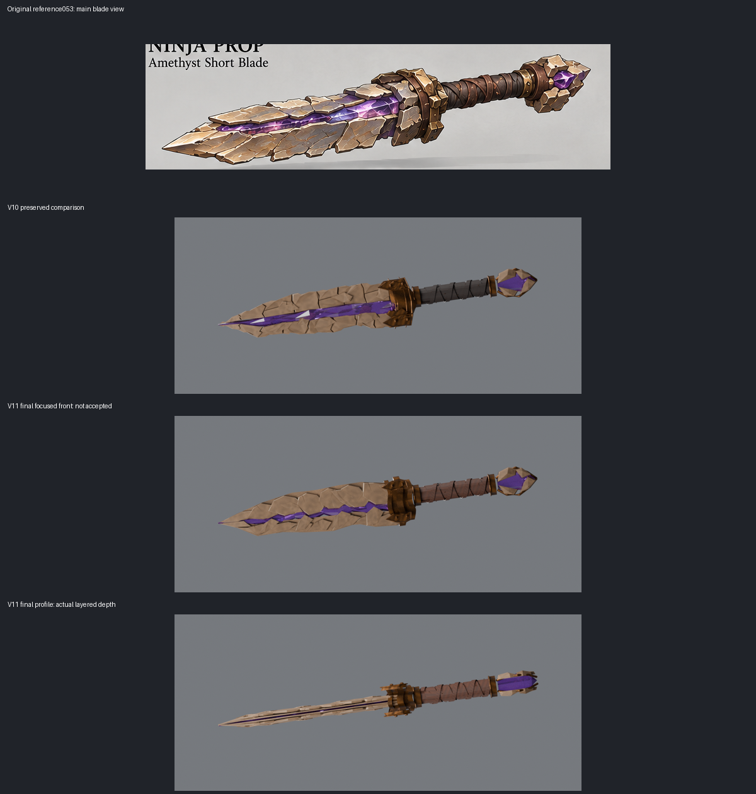
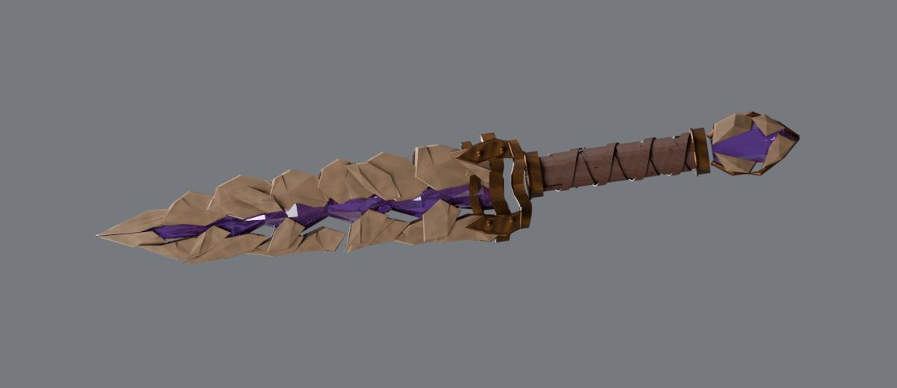
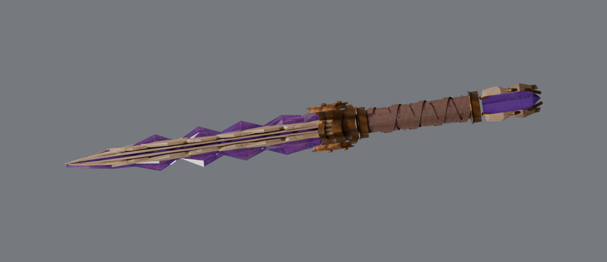
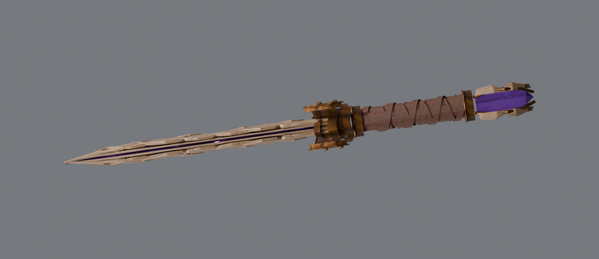

Real UV-mapped PBR geometry, source and GLB; two final CPU views only. Original reference053 is the target. Exact appearance, guard/pommel fidelity and production acceptance remain open.

Blender source · GLB · limits and reproduction
The first pass had chunky scallops and open guard windows. The second profile exposed crystal protrusion after stone thinning. These superseded diagnostics remain preserved; final views correct those specific regressions.


